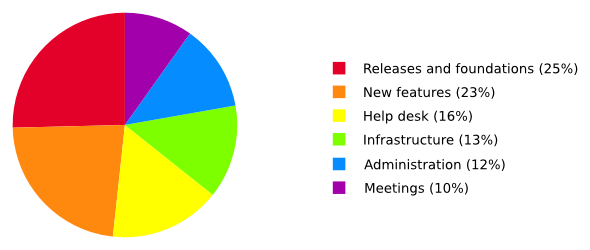

En nuestro último post explicamos [[por qué necesitamos donaciones|why we need donations]]. Hoy te contamos un poco cómo usamos esas donaciones.
En 2015, gastamos unos 184 000€, distribuidos como sigue:

Incluso aunque no hagamos cosas nuevas en Tails, publicar nuestras versiones cada 6 semanas es un montón de trabajo e implica además arreglar los problemas que se han encontrado en versiones anteriores, documentar los cambios, migrar a nuevas versiones de Debian, GNOME y Tor Browser, y asegurarse de que las bases de Tails siguen siendo relevantes. Ya que las fechas de versiones de emergencia son impredecibles, son difíciles de financiar a través de subvenciones, por eso normalmente las financiamos con las donaciones.
El desarrollo de nuevas funcionalidades no es una parte muy grande de nuestro presupuesto. Son cubiertas casi en su totalidad por subvenciones o desarrolladas por voluntarios. Desde 2015 las nuevas funcionalidades que no fueron financiadas a través de subvenciones incluyen:
- Integrar el cliente de Bitcoin Electrum.
- Reemplazar Vidalia con Onion Circuits.
- Continuar trabajando en una nueva versión del Tails Greeter.
- Mentoring a Google Summer of Code on Tails Server to allow running onion services from Tails (websites, collaboration tools, etc.).
- Añadir un modo offline que corta todas las redes.
- Añadir soporte para puentes
obfs4. - Escribir numerosas adiciones a nuestra web y documentación.
Nuestro help desk ayuda a cientos de usuarios de Tails cada mes. Procesar cada usuario nos cuesta un promedio de 6€. En 2016 nuestro help desk se financió exclusivamente de donaciones.
Organizar nuestros propios encuentros y atender conferencias en nuestro campo es crítico para mantener viva y relevante nuestra comunidad. Pero es difícil financiar esto con subvenciones, así que las donacines nos ayudan un montón en este aspecto. Desde 2015 hemos atendido más de 15 conferencias internacionales sobre software libre (DebConf), libertad en Internet (IFF), hacking (32C3), derechos humanos (RightsCon) y periodismo (LoganCIJ). Y hemos organizado más de 10 encuentros internos en persona y hackatones de desarrollo.
In 2015, we worked a lot on infrastructure, for example to write an automated test suite to verify continuously the well-functioning of our ISO images, to automate the build of development ISO images for testing, etc. This work is invisible to the user but, for example, makes it much faster to publish emergency releases when we discover serious bugs.
Para que Tails funcione, además hay que hacer bastante administración para juntar fondos, hacer la contabilidad, organizar el trabajo, escribir reportes, etc.
Desde 2015 agregamos traducciones de persa e italiano a nuestra web, y trabajamos en el prototipo de una plataforma de traducción para permitir que más traductores contribuyan y gente más diversa use Tails.
Si te gusta nuestro trabajo, por favor tómate un minuto para mantener Tails a flote.